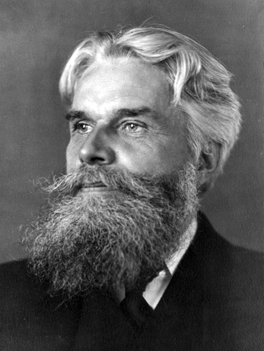

Havelock Ellis:
Estudios sobre la psicología del sexo
Havelock Ellis, [1859-1939] fue un médico inglés, prolífico escritor sobre temas de sexualidad reunidos en siete volúmenes que hemos traducido al español, siendo esta la única versión digital disponible en castellano. En esta magnífica obra que Ellis escribió a lo largo de su vida trata sobre los siguientes temas: I.- La evolución del pudor - El fenómeno de la periodicidad sexual - Autoerotismo; II.- Inversión sexual; III.- Análisis del impulso sexual - Amor y dolor - El impulso sexual en las mujeres; IV.- La selección sexual en el hombre - Tacto - Olfato - Oído - Vista; V.- Simbolismo erótico - El mecanismo de detumescencia - El estado psíquico en el embarazo; VI.- El sexo en relación a la sociedad; VII.- El eonismo y otros estudios suplementarios; VIII.- Hombre y Mujer. Es importante destacar que los volúmenes I al VI forman parte de la serie original de los Estudios, hasta el punto que Ellis se despide al final del volumen VI. Sin embargo, apareció unos años después, un volumen VII, con algunos temas que quedaron en el tintero a lo largo de los años. Ellis no sólo escribió sobre sexología; era un amante de la literatura y en general, un verdadero filósofo. La colección presentada aquí, constituye las Obras Completas de Havelock Ellis, no disponibles como conjunto en ningún otro idioma aparte del castellano. Son 34 volúmenes que incluyen su autobiografía, la biografía que escribió sobre él Isaac Goldberg en 1926 y una obra de su esposa Edith Ellis, que Havelock publicó después de la muerte de ella. En inglés se hallan como obras muy dispersas en diversas bibliotecas y ha sido un trabajo de minería explorar la red en su búsqueda, antes de procesarlas y traducirlas.
Es necesario destacar que aunque los primeros títulos de sus Estudios fueron escritos en Inglaterra, fueron publicados en los Estados Unidos, debido a la estricta censura victoriana en su país de origen. Sus ideas, avanzadas para su época, son útiles aún hoy, y es llamativo que su nombre no sea muy difundido a pesar de la gran contribución que hizo a la ciencia.
Leer a Ellis es realizar un viaje al pasado, con sus múltiples referencias a estudios de zoólogos, biólogos y antropólogos en el terreno, parece meterse uno en un mundo que apenas vislumbramos en novelas de aventuras, mientras nos empapamos de la ciencia médica de hace un siglo, que no era tan ignorante como solemos creer, excepto por la escasez de medios tecnológicos. Este monumental trabajo de Havelock Ellis es una obra de arte histórica y médica que puede contribuir mucho a la cultura del individuo curioso. Ellis fue un autor importante, merecedor de recibir nuestro tributo, al publicar en castellano esta versión digital, esmeradamente traducida y editada, incluso, más ordenada y prolija que las fuentes inglesas disponibles en Internet libres de derechos.